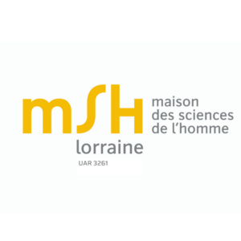
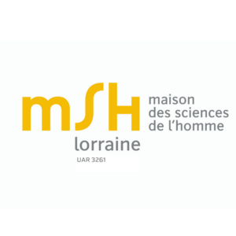

Organizing Committee
Sophie Robert-Hayek (MSH Lorraine, University of Lorraine)
Frédérique Rey (Ecritures, University of Lorraine)
Program Committee
Sophie Robert-Hayek (MSH Lorraine, University of Lorraine)
Frédérique Rey (Ecritures, University of Lorraine)
Jacques Istas (Laboratoire Jean Kunzmann, University Grenoble-Alpes)
Claire Clivaz (Université Catholique de Louvain)
Keynote speakers


 
